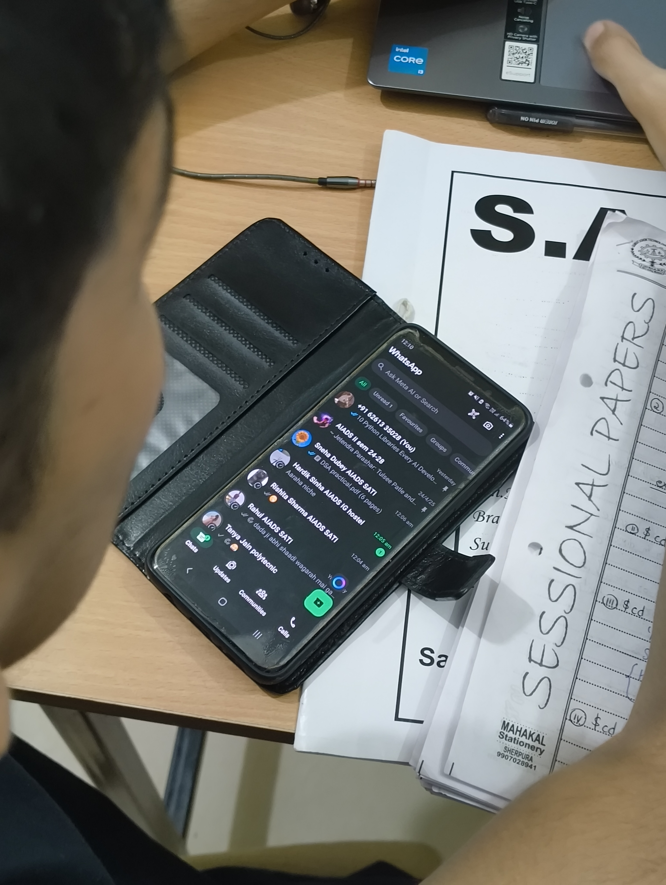

Me like someone?
yes.
How do i talk to her.
How do i talk to her.
How do i talk to her.
How the fuck do i talk to her.
How the actual fuck do i talk to her.
daily dekh raha hu. my heart starts racing after seeing her. only if i was good with making friends and shit. shit. why don't good things happends with me. maybe good things take time. fuck yaar. i don't have time
*plays hysteria*
i know i've got potential, but have i got potential?
Edit: 21-12
There's always someone in between, competition hi itna high hai, and having low self esteem isn't helping either. Ab bas dekh hi sakta hu. Lagta hai peak meltdown hone wala hai mera.
jo bhi ho, i'm always happy from outside. Everyone's life is a roller coaster, even his. He recently had a bad car accident involving his family, everything is fine now, but at a time it was not. Respect, from both side.
lol, was just scrolling and this post came up in reddit. hmm, ovethinking begins here.
chud gaye gru, discord me female moderator, sachme chud gaye. Ab move on hoga, ya nahi hoga. shit yaar, hamesha late hojata hu. Luck hi kharab hai.
aura hai aryabhaat ka
woh introvert hai, fir bhi bandi hai, mai kya hua fir?
Edit: 22-12
She was my first crush, and most probably my last.
Ghor kalyug hai, bas hogaya mera toh.
Edit: 23-12
"Beauty queen, attitude holder". damn, aaj log bol rahe the yeh. Mujhe nahi lagta itna attitude hai usme. lol, mujhe kya, mai toh chala.
Edit: 25-12
Kuch toh kiya maine, long term effort, dekhte hai, abhi toh 8 month lagega usme. This blog is gonna be big.
Thank you rahul bhai, apke bina possible nahi tha. mai toh na kar pata.
Edit: 27-12
fuck, yeh toh socha hi nahi, valentines day toh 14feb ko hai, kisi ne/usne hi haath mar diya toh.... . Kuch loss nahi hoga, maine toh abhi efforts bhi nahi dale. shit. lmfao. chudgayegru. shayad nahi
Edit: 05-01
Girl, I'll stay lonely, cause you're the only one that knows me, and I can't be without you
- Vishal
|| Also a data dump coming up soon :evil_face: ||
Edit: 10-01
Fuck you Goomaster.
Will upload audio & video files later.
Edit: 13-01
Saw her after days. daisies.
>
been a month since this site was up. yay. this, brings joy.
Edit: 16-01
Har gaya mai shayad. It seems imposible now, mere standard aur uske standard me bahoot difference hai. Bahoot time lag gaya yeh samjhne me.
khud ka bar raise karna is an only option i see, lekin isme time lagega, yeh tab tak toh nahi ho raha jab tak mai hostel me hu. Lekin tab tak bahot late hojayega, feb me jyada din nahi. Long story short, i lost the only game which i had chance to play. maybe it's the end, who knowns, answers are encrypted. And this, doesn't sparks joy. good for them.
peace out, anger inside.
.
Edit: 02-02-2025
reddit post
is courage what i am lacking?
Edit: 06-02-2025
something just hit me hard. i'm looking for baddie, while being baljeet(from pircel). similarly, she must also be looking for a abuzer, while being loyal. A dog, always looks for his master, at least a loyal one does.
Also, who's gonna tell her this?
Edit: 07-02-2025
Still don't get the reason behind valentines day, i mean you've got 365 days to express your love, but you are gonna do it only in these 2 week. huh!? makes no sense to me. maybe because i don't have anyone to show love to.
Edit: 08-02-2025
oh come on, pls noooooooooooooo
Edit: 12-02-2025
Vedanshi so dumb, he probably licks soap to clean his mouth.
skill sikhu jhaat bhar, ladkio ko video call karu raat bhar.
:haat_247:
tere mummy ke saath bhi koi essa kar de
Edit: 13-02-2025
ngl, this is me in this blog
Edit: 14-02-2025
I think it's very much over. I got other thing to worry about, and i'm not gonna cry over a gril who doesn't even know whats happening. Only if they made first move. Come on man. I am done with this for now. fr.
end.
Edit: 24-02-2025
these subtle eye contact we keep making
Edit: 26-04-2025

kavi kehna chahte hai . .. .
#kavi galat tha
Edit: 05-06-2025
this is what i look for. Forcing things, like everyone does, feel not natural to me. And some girls even try to adjust into this toxicity. The fomo is the try joy killer.
Blog Creation: 2024-12-16
Last edited on: 2025-06-05